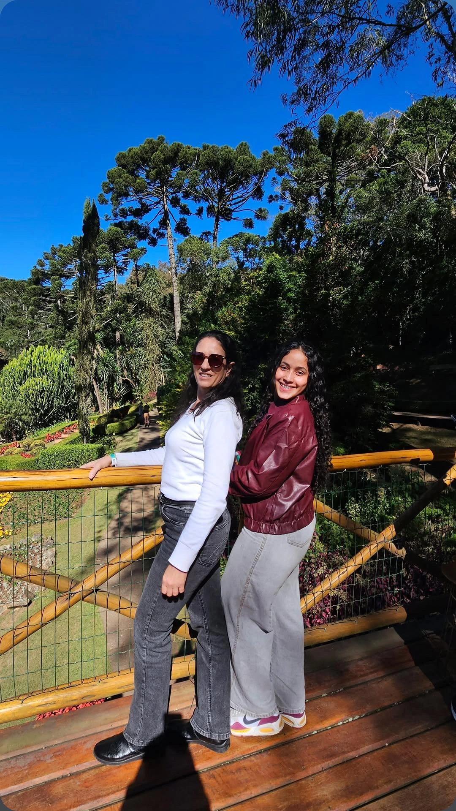
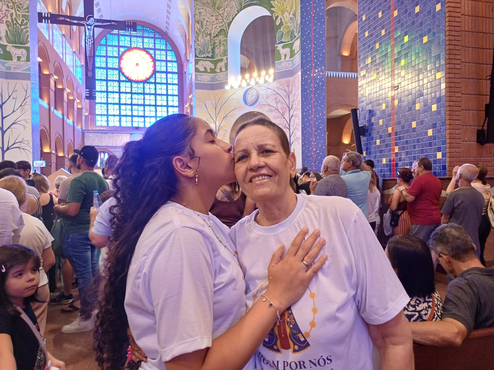
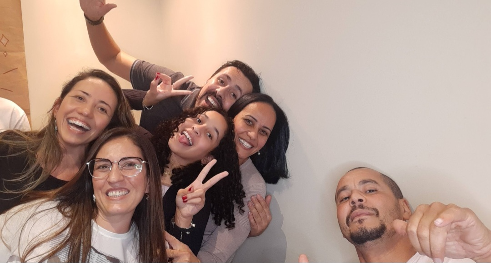
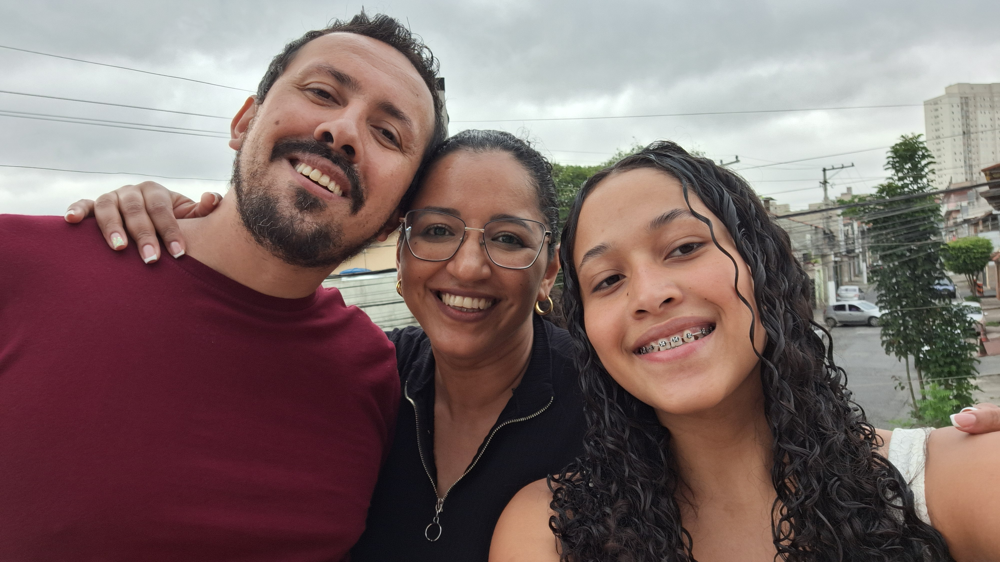
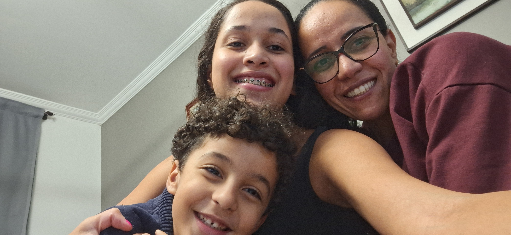
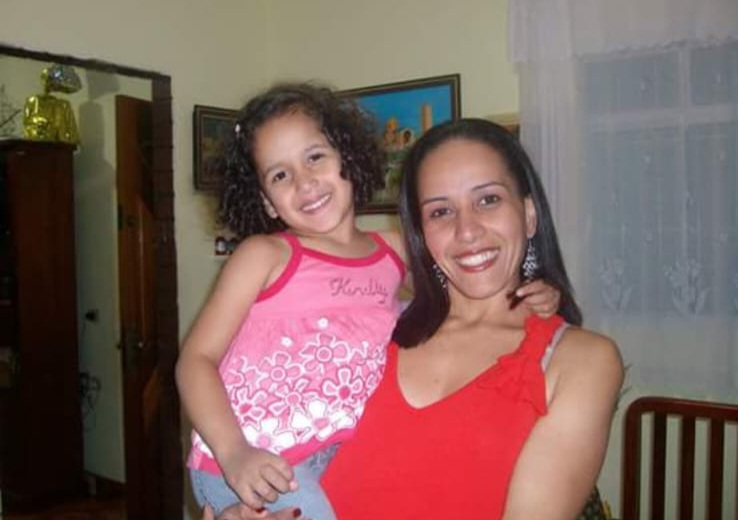
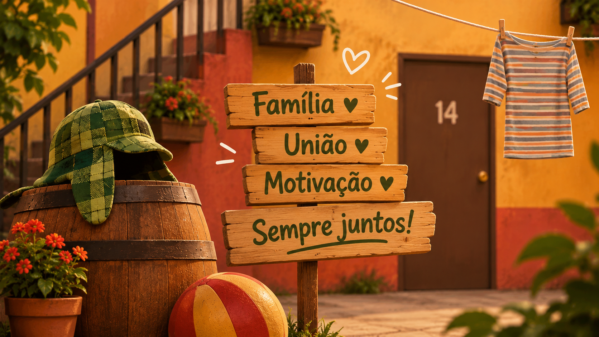
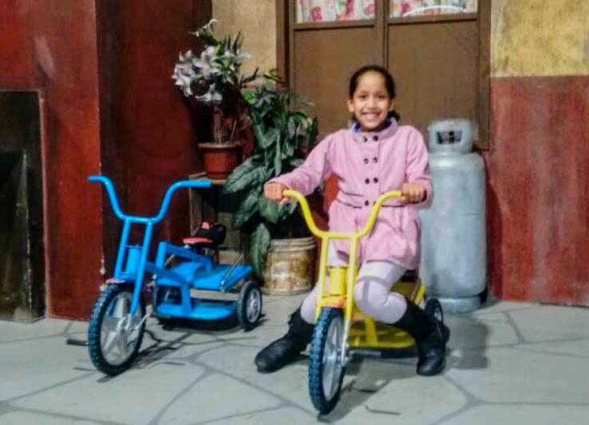
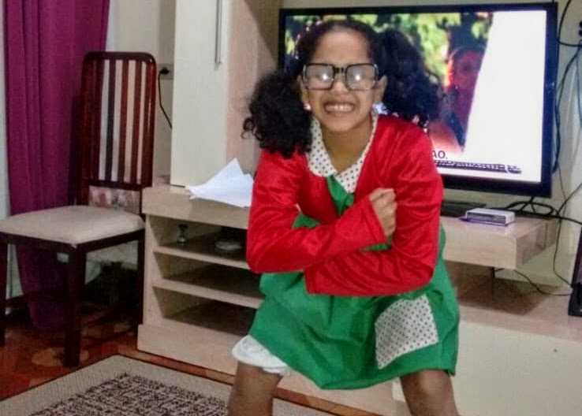
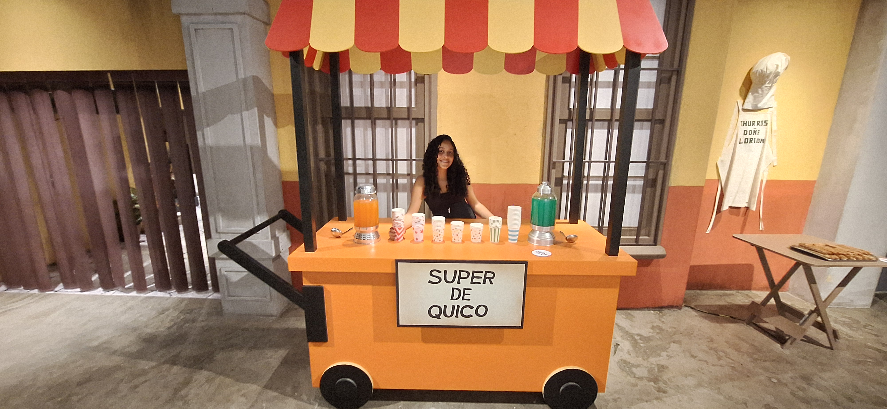

Como o humor inocente de uma vizinhança uniu gerações no mundo inteiro.

Minha paixão por Chaves vem desde muito pequena. Por volta dos meus 5 anos de idade, eu já adorava assistir ao seriado na televisão, e aquilo rapidamente se transformou em um dos melhores momentos do meu dia. Eu me lembro de ficar vibrada assistindo, dando risada e compartilhando aquilo com o meu avô, que sempre gostou muito do programa e fazia questão de colocar na TV para assistirmos juntos.
Conforme o tempo foi passando, o seriado deixou de ser apenas um programa de TV e virou parte da minha vida. Eu adorava falar sobre o assunto, soltar bordões e piadas com as amigas que também gostavam, criando um apego emocional enorme. Sempre que saía anúncio de alguma exposição, bonecos ou eventos temáticos, eu pedia para a minha família — que também sempre adorou —, e eles me levavam. Nunca vou esquecer da primeira vez que fui a uma exposição da Vila do Chaves com eles. Na mente de uma criança, era algo quase mágico e meio bizarro ao mesmo tempo: eu estava dentro do cenário da vila, nos lugares onde eles gravavam! Visitei a casa do Seu Madruga, os cantinhos da vila e tirei várias fotos.


Com os anos, essa paixão se tornou uma marca registrada minha. Quem me conhecia, sabia: tudo o que era relacionado a Chaves estava totalmente atrelado à minha pessoa. Virou um hábito na minha vida colocar o seriado na televisão para ficar de fundo enquanto eu fazia qualquer outra coisa. Mesmo sabendo de tudo o que vai acontecer, de cada fala e de cada detalhe de cada episódio, aquilo ainda tem muita graça para mim. É difícil até explicar, mas parece que faz realmente parte de quem eu sou. Chaves tem um cantinho guardado e dedicado completamente no meu coração. E, mesmo passando os anos, eu continuo querendo tudo o que é relacionado a esse universo — se eu pudesse, teria o quarto inteiro tomado por quadros e referências do seriado. É um tema que realmente me toca e me faz feliz.






Com os anos, essa paixão se tornou uma marca registrada minha. Quem me conhecia, sabia: tudo o que era relacionado a Chaves estava totalmente atrelado à minha pessoa. Virou um hábito na minha vida colocar o seriado na televisão para ficar de fundo enquanto eu fazia qualquer outra coisa. Mesmo sabendo de tudo o que vai acontecer, de cada fala e de cada detalhe de cada episódio, aquilo ainda tem muita graça para mim. É difícil até explicar, mas parece que faz realmente parte de quem eu sou. Chaves tem um cantinho guardado e dedicado completamente no meu coração. E, mesmo passando os anos, eu continuo querendo tudo o que é relacionado a esse universo — se eu pudesse, teria o quarto inteiro tomado por quadros e referências do seriado. É um tema que realmente me toca e me faz feliz.